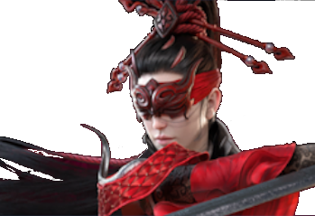
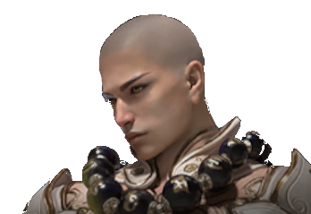
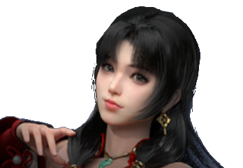
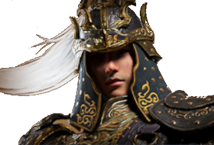

|  |
Archetype:
Weapons: Longsword & Pistol Description: With her long-range attacks and Aegis-shattering skills, this hero can dish out consistent damage to her enemies. Her ultimate skill unleashes a devastating blast that drains the Aegis of multiple foes and restores her own health. She is a balanced hero who can survive and thrive in any combat situation. |
 Aegis-Breaker
Aegis-Breaker DPS
DPS |
Archetype:
Weapons:
Description: This hero has one of the safest kits while also being able to deal massive Aegis damage. Her Ultimate ability gives her a rapid firing mech that allows her to deal with pesky Green Ghosts and Lightning Towers with ease. It also comes with a cannon mode that hits for a small AoE and can apply a buff to her teammates damage in a radius around her for a short period. |
 Nunchucks &
Nunchucks &  Musket
Musket|  |
Archetype: Tank Weapons: Staff & Description: This hero is a skilled duelist who can parry attacks with ease with his ability and also grant himself damage reduction. He can use his ultimate skill to aggro a boss for his teammates to focus purely on dealing damage. Furthermore, his ultimate restores his Health fully when activated. |
 Swarm
Swarm |
Archetype:
Weapons:
Description: This hero is a formidable fighter who can strike hard with his great sword. His ability can be used to dodge attacks, deal decent Aegis damage over time or to immobilize enemies without Aegis temporarily. His ultimate skill makes his team immune to debuffs and creates a barrier that blocks ranged attacks and slows down enemies who approach him. |
 Greatsword &
Greatsword &  Bow
Bow |
Archetype:
Weapons: Dual Blades & cannon Description: This hero is a fiery fighter who can incinerate large groups of enemies with his cannon and bosses with his fireballs. He can use his fireball ability to make his targets more vulnerable to attacks for a short time. His ultimate skill boosts his damage by 10% and lets him unleash unlimited fireballs until his Rage is depleted. |
|  |
Archetype:
Weapons:
Description: A core hero for pretty much any team especially in more difficult content. She can safely revive her teammates from a distance, is the only hero who can heal someone other than themselves, and give some great defense and attack buffs alongside it. Her Ultimate can also be influenced by Temulch, Tarka & Valda Cui for varying effects. |
 Support
Support Katana & Repeating Crossbow
Katana & Repeating Crossbow |
Archetype:
Weapons: Spear & Description: A single-target focused hero that has the ability to soak her enemies, reducing their damage dealt by 10% and an Ultimate that grants a separate health bar that allows her to CC enemies around her or deals consistent damage to a boss in safety. When with a Tarka, her Soaked debuff counteracts Tarka's Vulnerable debuff but deals the burn damage instantly instead of overtime. |
|  |
Archetype:
Weapons: Polesword & Cannon Description: This hero is a powerful and agile fighter who can charge up his attacks while moving around the battlefield. He can use his ability to greatly weaken his enemies' attack power for 10 seconds and his ultimate skill to withstand a lot of damage while dealing area-of-effect damage. Like Tianhai, he can also heal himself by entering his ultimate skill mode. |
 |
Archetype:
Weapons: Dagger & Pistol Description: This hero is a swift fighter who’s stronger attacks are more focused around her Dagger Dash. She can use her ability, up to two times, to boost her damage by 40% and teleport a short distance away. Her ultimate skill enhances her with life-steal, reduces the cooldown of her ability and alters her ability into an attack, allowing her to deal massive damage and heal herself quickly. |
When starting to play Naraka's Showdown Mode, I recommended that you choose one hero to main and two secondary choices. This is because when you pass Normal and Hard difficulty missions, Showdown does not allow duplicate heroes on the same team. Picking two secondary choices helps to ensure that you are not left in a tight spot because someone else locked in your favorite hero(es) first. Kurumi is recommended to be one of your main 3 because of her being the only hero that can heal & buff her teammates.
There are a total of 5 chapters currently in the game. 4 of those chapters are in Morus Isle and 1 is in Holoroth. In total, there are 13 missions among the regular story, with each mission having 3 difficulties. Each mission has 2 heroes that it wants you to beat it on a certain difficulty with to unlock their corresponding lore segment.
As of right now there are 3 difficulty levels: Normal, Hard and Nightscream.
Normal difficulty can be considered the tutorial of the game.
Many of the missions will have limited mechanics, enemies will have smaller movesets and attack less often, and bosses are limited to 1 phase.
Hard difficulty introduces Omens, semi-random events that can make certain enemies stronger or add hazards to the battlefield.
Furthermore, it introduces more boss phases and more aggressive enemies.
Nightscream difficulty brings in mutliple Omens per mission and significantly more aggressive enemies.
This will be your first major difficulty spike that you'll face as everything hits harder and takes longer to kill.
However, at this point the missions here will have better loot pools to complete your Souljade builds with.
Next Reset:
At the time of the date above, the fatigue system is reset back to 0 as well as the weekly quests you have.
At 0 to 600 fatigue you will recieve 150% rewards (50% more rewards).
At 601 to 1800 fatigue you will recieve 100% rewards.
At 1801 to 2400 fatigue you will recieve only 75% rewards.
Once you have reached 2400 fatigue, you can no longer receive any Showdown-based rewards until the next reset.
As of right now, there are 15 different missions available,
those being Eventide Ember, Dharma-Ending Ruin, Ominous Descent, Desert Tribulations, Immovable,
Toppled Mountains, Gelid Yushan, Chaos of the Immortals, None Shall Pass, Together We Stand,
Dangers in the Deep, Miasma Swirl, Chasm Undertow, Enigma Domain, and Yama's Abyss.
Each mission can fit into a category, those being Stronghold Assault, Wave Defense,
Boss Fight, Enigma Domain, and the newest category Yama's Abyss.
- Missions: Eventide Ember, Desert Tribulations, Chaos of the Immortals, and Dangers in the Deep.
- Objective: Kill Stronghold's chest guards and the final boss.
- Description: Serve as great Sense level boosters because they're generally a much lower difficulty,
don't require you to kill everything, and are guaranteed to drop 6 or more souljades.
- Missions: Dharma-Ending Ruin, Immovable, None Shall Pass, and Miasma Swirl.
- Objective: Kill all mobs and boss(es).
- Description: Generally the longest mission of each chapter, but have more sought-after drops in their loot pool.
Heavier focuses on teamwork and a smaller pool of guaranteed Souljades, however, due to the number of enemies, can have the largest amount of drops.
- Missions: Omnious Descent, Toppled Mountain, Gelid Yushan, Together We Stand, and Chasm Undertow.
- Objective: Defeat the boss.
- Description: Can be the longest or shortest mission depending on how strong your team composition is.
Usually contains the most sought-after Souljades, but has a lower drop rate due to the small number of sources and a limited amount of Omens. Consumables are the most limited here, so effective use of heals is warranted.
- Missions: Topaz and Peak.
- Objective: Reach Enhance Level 8 or 9 and defeat all bosses.
- Description: Having a max clear time of ~16 minutes, a pre-established strategy is encouraged,
with Archers being ignored and Hammer Ents & Warlocks being prioritized.
- Missions: Stages 1 - 48 and Void-Space Stages 25, 30 & 35
- Objective: Clear all 15 rooms (30 rooms in Void-Space).
- Description: The new longest mission type we have as of now.
Gets progressively difficult as you make it down the stages, with only the best of the best being able to achieve the rank of Showdown Paragon and clearing up to stage 48.
- Charged Attack = Charged Focus Attack
- Uncharged Attack = Normal Attack
- Countering = Special attack after a parry
- Opening = Short period where you have time to fit in an attack safely
- Aegis DPS Rotation = DPS rotation when you're prioritizing breaking Astral Aegis
- Health DPS Rotation = DPS rotation when you're prioritizing health damage
- Horizontal = Left Click | Right Bumper
- Vertical = Right Click | Right Trigger
- Astral Aegis = Yellow bar above certain enemies that when broken causes you to deal 2x damage to them
- Aegis-Break martial skill = Showdown exclusive attack unlocked at hero level 12. Deals bonus damage to Aegis
- Dodge Cancel = Using a dodge right after an attack lands to cancel the end-lag. See Dodge Canceling
- Parry Counter = Exclusive to bosses in Showdown, follow-up attacks shortly after being parried, usually much faster than normal attacks
- Late Game = Point in time right before you reach the level cap and can attempt the end-game
- End Game = The peak difficulty of the game, made up of Enigma Peak, Speedrun and later stages of Yama's Abyss. Both missions require good builds, strategy, and skill to clear effectively.